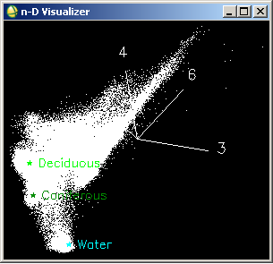

6 Classification - I
6.1 Summary
Firstly, based on my experience with different GIS software, there are primarily two common types of image classification: Unsupervised and Supervised. In unsupervised classification, clustering methods automatically group pixels with similar pixel values, without the need for initial human input. These clusters must then be manually labeled into classes such as built areas, water, forests, etc. Conversely, supervised classification relies on manually created training datasets, ideally randomly generated to prevent overfitting. Classes labeled in the training dataset are then applied to classify the entire image accordingly.
Additionally, feature space can be utilized for image classification by plotting spectral signatures. By analyzing scatter plots, we can manually demarcate and classify images. However, understanding the spectral signatures associated with different classes is essential to perform this method effectively.

In class, we explored various classification methods, focusing particularly on classification trees and regression trees. Classification trees are used for discrete categories, while regression trees apply to continuous dependent variables. To effectively construct a regression tree, data is segmented into subsets for individual regression analyses. However, excessively dividing the data can lead to overfitting. Therefore, determining the optimal number of subsets involves calculating metrics such as the Gini impurity, which helps us to find the root of the tree. While manual selection of these splitting points using histograms is possible when clear distinctions exist, typically a more robust approach is to calculate the Sum of Squared Residuals (SSR) for potential split points, choosing the one with the lowest SSR. This iterative process continues for subsequent splits. To further mitigate overfitting, a minimum threshold for observations is recommended before splitting, aiming to achieve a balance of low bias and low variance.
Support Vector Machine (SVM) are used to split the data into different sections and the divider is known as the seperating hyperplane, this method is used to get the best classification whilst allowing some wrongly classified points.
One thing to notice is that as these classification methods get more sophisticated and accurate by using methods like Random Forest, SVM, Deep Neural Networks (DNN), the interpretability will decrease. This also means that it will be hard to debug these more sophisticated methods.
6.2 Applications
In Urban Planning, supervised classification of imagery is very prominent for Land Utilization and Land Cover(LULC) mapping. LULC mapping is very essential when planning for the future. It also helps to monitor the difference between the Land Use which was given to certain areas and the existing Land Utilization. Another vital application of classification is to identify the extent of informal settlement areas. This is helpful so that they can find how many unplanned housing areas there are so that they can plan accordingly (provide new housing area, redevelopment of informal settlement etc.). Classification can also be used to monitor the growth of the city through decades, which will help the urban planners to find in which side or how the city is organically growing so that they can regulate it. If this is left unwatched then it can get difficult afterwards to provide services and facilities.


Classification is also important in climate and environmental planning, where areas of interests have to be monitored constantly and even small changes can be very critical, this can be land degradation, deforestation, glacier movement etc. Observing these climatic and environmental changes is a crucial part of sustainability and it affects all life on the planet, this helps to make global policies which can reduce the global warming effect.
Now by using platforms like Google Earth Engine (GEE) people can automate these classification processes and monitor changes and get updated classifications as we get newer images from satellites.
6.3 Reflection
I feel like there are so many methods for classification and it is very imporatant to know when to use which method and whether it is worth it to go for more sophisticated models like SVM and DNN which might require more technical expertise or whether simpler methods like regressions is enough. The results of an analysis for an area can defer so much by the classification methods an user uses, so it is important to know the advantages and disadvantages of these methods and which methods are often used in a particular field.
6.4 References
https://gisgeography.com/image-classification-techniques-remote-sensing/
http://www.50northspatial.org/n-dimensional-spectral-feature-space-envi/
Amini, S., Saber, M., Rabiei-Dastjerdi, H. and Homayouni, S. (2022). Urban land use and land cover change analysis using random forest classification of Landsat time series. Remote Sensing, 14(11), p.2654. Available at: https://doi.org/10.3390/rs14112654